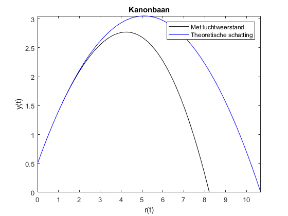

theta = pi/4;
vi = 10;
k = 0.01;
y_0 = 0.5;
test = 200;
m = 0.2;
g = 9.8;
vy0 = vi * sin(theta);
vx0 = vi * cos(theta);
syms t;
syms h;
eqn = solve(m/k * log(k*vx0/m * t + 1) == h,t);
t = eqn;
x = m/k * log(k*vx0/m * t + 1);
tau = sqrt(m/(k*g))*atan(sqrt(k/(m*g)) * vy0);
p = m/k * log(k*vx0/m * tau + 1);
r1 = m/k * log((cos(-sqrt(k*g/m)*t + atan(sqrt(k/(m*g))* vy0)))/(cos(atan(sqrt(k/(m*g))*vy0)))) + y_0;
r2 = -m/k*log(cosh(-sqrt((k*g)/m)*(t-tau))) + m/k*log((cos(-sqrt(k*g/m)*tau + atan(sqrt(k/(m*g))*vy0)))/(cos(atan(sqrt(k/(m*g))*vy0)))) + y_0;
syms z;
syms o;
o = solve(r2,h);
a = cellfun(@(u) u(2:1), num2cell(o,1), 'UniformOutput',false);
a1 = cellfun(@(u) u(2), num2cell(o,1), 'UniformOutput',false);
A = str2num(string(a1));
syms bb;
f(bb) = -g*bb^2/(2*(vi)^2)*sec(theta)*sec(theta) + bb*tan(theta) + y_0;
rot = solve(f);
B = str2num(string(rot(2)));
fplot(r1,[0,p],'color','black');
hold on;
fplot(r2,[p,A],'color','black', 'HandleVisibility','off');
fplot(f,[0,B],'color','blue');
title('Kanonbaan')
xlabel('r(t)');
legend('Met luchtweerstand', 'Theoretische schatting');
ylabel('y(t)');
Warning: Solutions are valid under the following conditions: -pi < imag(h)/20 &
imag(h)/20 <= pi. To include parameters and conditions in the solution, specify
the 'ReturnConditions' value as 'true'.
